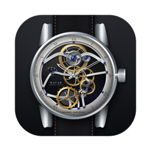

WOUND
A mechanical watch for your Mac that you have to wind.
Support
Questions, bug reports and suggestions are welcome. Open an issue at github.com/s3onghyun/wound/issues; the developer reads every one. Please say which macOS version you use and what you expected to happen.
Where is the window?
Wound lives in the menu bar (gear icon) and has no Dock icon. If you closed the watch window, choose Show Wound from the menu bar icon.
How do I wind it?
Scroll over the crown at 3 o'clock, or drag upward over it. With Automatic on, your everyday mouse and keyboard activity also winds it a little.
Why did it stop?
The 40-hour power reserve drains in real time, even while Wound is closed. Wind the crown to start it again.
Where are the settings?
Choose Settings… from the menu bar icon for sound (off by default), automatic winding, always on top and demo speed.
지원
질문, 버그 제보, 제안을 환영합니다. github.com/s3onghyun/wound/issues에 이슈를 남겨 주세요. 개발자가 모두 읽습니다. 사용 중인 macOS 버전과 기대한 동작을 함께 적어 주시면 도움이 됩니다.
창이 어디 있나요?
Wound는 메뉴 막대(톱니바퀴 아이콘)에 있고 Dock 아이콘은 없습니다. 시계 창을 닫았다면 메뉴 막대 아이콘에서 Wound 보기를 고르세요.
태엽은 어떻게 감나요?
3시 방향 크라운 위에서 스크롤하거나 위로 드래그하세요. 자동을 켜 두면 평소의 마우스·키보드 사용도 태엽을 조금씩 감습니다.
왜 멈췄나요?
40시간 파워 리저브는 Wound를 닫아 둔 동안에도 실제 시간으로 줄어듭니다. 크라운을 감으면 다시 갑니다.
설정은 어디 있나요?
메뉴 막대 아이콘에서 설정…을 고르면 소리(기본값 끔), 자동 감기, 항상 위에 표시, 데모 속도를 바꿀 수 있습니다.